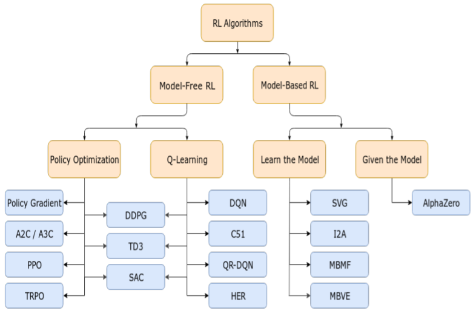

优化算法四种基本方法
- Taylor展开
- 考虑对偶
- split（拆分问题，比如换元法）
- 交替极小（BCD）
凸优化
强对偶/KKT条件
单纯形法
内点法
压缩感知
稀疏表示问题：
L0范数是NP难问题，L1范数可以等价为线性规划
稀疏表示=好的压缩感知
第一个基础结论：（感知稀疏信号）
x是s-稀疏的（s个非零元），通过m个随机感知，$b_k=
如果$m\geq slog(n)$就可以精确重建
第二个基础结论：（非适应性感知可压缩的信号）
$m\geq slog(n)$甚至$m\geq slog(n/s)$，就可以达到
其中$x_s$是s个最大的系数。
第三个基础结论：（对比Lasso或Dantzig）
令$\bar{s}=m/log(n/m)$
SPARK
spark(A)定义为A最小的线性相关列个数，一般情况下，$spark(A)\neq rank(A)+1$
定理（Gorodnitsky&Rao 1997）：如果$Ax=b$有一个解x满足$||X||_0\leq spark(A)/2$，那么x是最稀疏的解。（证明思路：$||x||_0+||y||_0\geq ||x-y||_0\geq spark(A)$）
Coherence
Coherence定义为A列向量间最大的正则内积（夹角大小）：$\mu(A)=max\frac{|a_k^Ta_j|}{||a_k||_2||a_j||_2}$
定理（Donoho&Elad 2003）：$spark(A)\geq 1+\mu^{-1}(A)$
证明：$A$列正则化为$\bar{A}$，令$p=spark(A)$，$B=\bar{A}^T\bar{A}$的$p\times p$的主子式。所以B对角线为1，且$\sum_{j\neq i}|B_{ij}|\leq(p-1)\mu(A)$。如果$p<1+\mu^{-1}(A)$，那么$|B_{ii}|>\sum_{j\neq i}|B_{ij}|$，所以$B\succ 0$（Gershgorin circle theorem），$spark(A)>p$矛盾。
推论：如果$Ax=b$有一个解x满足$||X||_0\leq (1+\mu^{-1}(A))/2$，那么x是唯一最稀疏的解。
定理（Donoho&Elad 2003）：如果A有正则化的列且$Ax=b$有一个解x满足$||X||_0\leq (1+\mu^{-1}(A))/2$，那么x是唯一最稀疏的解，在L0和L1条件下。
证明：由前面定理可知$x$是L0唯一解，设$S$为x张成的空间，设$y$为L1的解，令$h=y-x$，所以$Ah=0$且$||h||_1<2||h_S||_1$（因为$||h_{S^C}||_1<||h_S||_1$）。根据$A^TAh=0$和$||h||_1=\sum_{k\neq j}|h_k|+|h_j|$，得到
综合两式得到$|h_j|<1$矛盾。
null space相关性质
引理：$0 < p\leq 1$，如果$||(y-x)_{S^C}||_p>||(y-x)_S||_P$，那么$||x||_P<||y||_p$。
定义：null space property（$NSP(k,\gamma)$），每个非零$h\in N(A)$满足$||h_S||_1<\gamma||h_{S^C}||_1$对所有$|S|\leq k$。
定理（Donoho&Huo 2001）L1范数问题可以唯一恢复k-sparse向量x从$b=Ax$当且仅当A满足 $NSP(k,1)$（证明：充分性S为x张成空间即可，必要性考虑等号成立条件$sgn(x_S)=-sgn(h_S)$。）
引理（Zhang 2008）：$||x||_1 < ||y||_1$的一个充分条件是$||x||_0 < \frac{1}{4}(\frac{||h||_1}{||h||_2})^2$
（证明：$||h_S||_1\leq\sqrt{|S|}||h_S||_2\leq\sqrt{||x||_0}||h||_2$，因而上不等式意味着$||h_{S^C}||_1 > ||h_S||_1$。）
定理（Zhang 2008）L1范数问题可以唯一恢复x如果
RIP(Restriceted Isometry constants)
定义：对k，$\delta_k$是最小的标量对所有k-sparse的x满足
想法：稀疏恢复=远离零空间，如果A有2s线性相关列则不能恢复
$\delta_{2k}$是是最小的标量对所有k-sparse的$x_1,x_2$满足
那么如果有s-sparse的解x满足Ax=b
- 如果$\delta_{2s}<1$则L0最优解唯一
- 如果$\delta_{2s}<0.414$，那么LP relaxtion的解唯一且相等
- (Cai-Wang-Wu)$\delta_{2s}<0.307$是充分的
- (Cai-Zhang)$\delta_{2s}<1/3$是L1重建的充要条件。
L1解的特征
x是解等价于$||x+h||_1\geq ||x||_1$对任意属于A零空间的h
L1重建的充要条件为对所有属于零空间的h，
KKT条件的性质
x是解当且仅当x可行，存在$\lambda$
即$\nabla f(x)\perp null(A)$。当$f(x)$不可微时，可用次梯度同样成立。
推论：那么L1解x是最优的当且仅当存在$u=A^*\lambda$，满足
如果$|u_i|<1$且$A^T$列满秩则x唯一。（只需证零空间的h，$||x+h||_1 > ||x||_1$）
T=supp(x)且$A_T$列满秩，定义valid dual certificate u（作用是证明可以达到）
则y是$A^*\lambda$的形式，且$u_i=sgn(x_i)$（$i\in T$）。对$i\in T^C$，$|u_i|<1$的证明如下
定义常数$\theta_{S,S’}$满足对所有不相交的集合$T,T’$，$|T|\leq S$，$|T’|\leq S’$，满足
如果$S\geq 1$且$\delta_S+\theta_{S,S’}+\theta_{S,2S}<1$，那么如果$|supp(x)|\leq S$，x唯一。
引理：令$S\geq 1$满足$\delta_S+\theta_{S,2S}<1$，那么存在$\lambda$满足对所有$j\in T$，$\lambda^*A_j=sgn(x_j)$，且对所有$j\in T^C$
压缩感知（算法）
L1正则的最小二乘问题
Proximal Gradient Method/ISTA/FPC
Proximal Gradient Method
定义$shrink(y,v)=sgn(y)max(|y|-v,0)$
Proximal Gradient Method for General Problems
其中r(x)可以是不可微凸函数（甚至可以是离散的如L0范数），同样可以得到
其中代理算子
Proximal Gradient也叫投影梯度法。
代理算子的性质：
然后由Cauchy-Schwarz不等式得到
收敛性问题
在一定假设下，$h(x)=x-\gamma\nabla f(x)$满足
线性搜索
那么设定
$r^k$的选择：Barzilai-Borwein法（$\min||rs-y||^2$）
$r^k$需要通过truncation限制大小
$\alpha^k$的选择：Armijo-like线性搜索（能够达到超线性收敛速度）
（Armijo-Goldstein：$C^k=F(x^k)$）
- FPC：$\Delta^k=(\nabla f^k)^Td^k
- FPC_AS：$\Delta^k=(\nabla f^k)^Td^k+\mu||x^k(r^k)||_1-\mu||x^k||_1
- non-monotone line search(Zhang and Hagar)：$C^k=(\eta Q^{k-1}C^{k-1}+F(x^k))/Q^k$，$Q^k=\eta Q^{k-1}+1$，$C^0=F(x^0)$，$Q^0=1$
三种名称
- proximal gradient method
- ISTA: iterative shrinkage thresholding algorithm
- FPC: fixed-point continuation method
如果$f(x)$满足Lipschitz连续条件$||\nabla f(x)-\nabla f(y)||_2\leq L||x-y||_2$，那么可以得到
复杂性分析
(证明：引理$F(x)-F(pl(y))\geq \frac{L}{2}(||pl(y)-x||_2^2-||x-y||_2^2)$)
FISTA: accelerated proximal gradient(APG)
FISTA/APG的理论收敛性质较好，但实际中不如B-B算法
令$y^1=x_0$，$t^1=1$
复杂性结果
证明：令$v_k=F(x^k)-F(x^*)$，$u_k=t^kx^k-(t^k-1)x^{k-1}-x^*$，那么
APG的几个变体
Variant 1
$x_{-1}=x_0$，$\theta_{-1}=\theta_0=1$
($\theta_k$其实相当于$t_k$的倒数)
Variant 2
用Bregman distance $D(x,y_k)$来代替$\frac 12||x-y_k||_2^2$，并且令$x_0=z_0=\theta_0=1$
Variant 3
$x_0=z_0=\arg\min h(x)$，$\theta_0=1$
三个变体收敛性都是$\sim \frac{1}{k^2}LD(….)$
增广拉格朗日框架
对偶问题
等价于
Augmented Lagrangian (Bregman) function
算法框架
第k次迭代计算$\lambda^{k+1},s^{k+1}$
更新(计算导数易得)
缺点是求min太慢
ADMM（An alternating direction minimization scheme）
在x更新步乘以步长1.618性能提升30%左右
Bregman method（实际与Augmented Lagrangian等价，但是计算更复杂）
Linearized ADMM
Review of Bregman method
Bregman method:
（等价于
Linearized Bregman method
实际上$x^k$逼近
矩阵恢复
常见于推荐系统
起源：Netflix电影推荐竞赛
Collaborative Filtering（协同过滤）
权重的确定：
求导可得
梯度下降求解：GD、SGD
Latent factor models
“SVD” on Netflix data:
预测
考虑到下式有显式解（奇异值分解）
所以将原问题
等价于
进行求解。
梯度下降方法：异步迭代QP（矩阵导数）
另外还有加上bias的latent factor model。
General Matrix Completion
这是个NP-hard问题
引入奇异值分解
(Eckart&Young 1936) if k<rank(A):
Positive semidefinite unknown
假设X半正定，那么可以转换为半定规划
Nuclear norm和spectral norms是对偶的
核范数最小化
SDP reformulation
Matrix Shrink Operator
Optimal solution
其中
可以证明这是non-expansive的。
计算量在SVD上。—>LANSVD、LMSVD、Randomized SVD等方法
low-rank factorization model
优点：不需要SVD
Nonlinear Gauss-Seidel scheme
这个算法需要计算广义逆，注意到
由此推出第二个版本：
这里还是有广义逆，又有$V=orth(ZY^T)$，因而
矩阵分离
M=W+E，其中W为低秩矩阵，E为系数矩阵
Robust PCA
（应用：监控录像分离人和背景）
增广拉格朗日函数
ADMM:
W-子问题：
其中$S_\beta$是将SVD的特征值shrink，见上文”Matrix Shrink Operator”
E-子问题：
其中$S_{\beta\mu}$是L1 shrink，见上文“Proximal Gradient Method”
low-rank factorization model for matrix seperation
考虑模型
对Z进行低秩分解
这里的增广拉格朗日函数为
ADMM依次优化U、V、Z、A。
非负矩阵低秩分解
基本相似，更加复杂
ADMM
运输优化
Application：image color adaption、shape interpolation、word mover’s distance
Kantorovitch’s Formulation
输入两个离散概率度量
其中$X=\{x_i\}_i,\:Y=\{y_j\}_j$是给定的点云，$x_i,y_j$是向量。
$a_i,\:b_j$是正权重，满足$\sum_{i=1}^ma_i=\sum_{j=1}^nb_j=1$
$C_{ij}$是花费，$C_{ij}=c(x_i,y_j)\geq 0$
定义Couplings
Transportation 问题
推广：Radon 度量$(\alpha,\beta)$ on $(X,Y)$
Transfer of measure by $T:X\to Y$
定义Y上的度量
离散情形下
连续情形下
Monge Problem
找到这样的T，使得
离散情形下
连续情形下
Wasserstein Distance
Kantorovitch Problem for General Measures
花费满足$c(x,y)=d(x,y)^p$，定义W-distance
可以证明这是个距离，且
Wasserstein barycenter
定义$C=M_{XY}$，那么W-距离等于
给定Y，b，找到X，a使得
Dual form
Entropy regularization
定义
定义Lullback-Leibler divergence
定义Entropy regularization问题
可以证明这个问题当$e>0$时解唯一。
解法：考虑Lagrangian对偶，令关于P导数为0
因此可以解得
根据KKT条件，令$u=e^{-\alpha/2}$，$v=e^{-\beta/2}$，$K=e^{-C/2}$，那么
Sinkhorn算法就是交替优化uv
Sinkhorn-Newton 法：令
即找到$F(\alpha,\beta)=0$的解。由此Newton Iteration为
Sinkhorn算法是忽略非对角元素的近似Sinkhorn-Newton算法
定义
定义Sinkhorn Distance如下
这是一个距离。
Shielding Neighborhood Method
Proposed by Bernhard Schmitzer in 2016
把主问题分解为多个稀疏子问题
对$N\subset X\times Y$，（称N为Neighborhood），
如果
则称为short-cut
定义：shielding condition是指这样的$(x_s,y_s)$使得
定义：shielding neighborhood是指对给定的$\pi$，满足下列条件的N：任意$(x,y)\notin N$，存在$(x_s,y_s)\in\pi$，$x_s,y_s$ shield x,y。
定义：multiscale scheme是把集合X分为层级结构，$X_0=\{\{x\}|x\in X\}$，之后每层是从前一层合并而来。
我们假设有两个子算法：
- solveLocal
- shield
主算法(从粗网格到细网格)
- $\pi=solveDense(k)$
- while k>0 do
- k-=1
- N={}
- 对 $(x,y)\in\pi$，$N=N\cup(children(x)\times children(y))$
- $\pi=solveSparse(k, N)$
- return
SolveSparse算法：利用当前等级k和可行邻居N来计算$\pi$
- i=1
- while i=1 or $C(\pi_i)\neq C(\pi_{i-1})$ do
- $\pi_{i+1}=solveLocal(N)$
- $N_{i+1}=shield(\pi_{i+1},k)$
- i+=1
- return
Large-scale ML
给定一个数据集$D=\{(x,y)\},\:(x,y)\sim P$，找到
Empirical Risk Minimizor(ERM) —— Expected Risk Minimizor
对任意小的$\epsilon,\delta$，当n足够大的时候，有
Hoeffding不等式：$X_i$是i.i.d.随机变量，且$E(X_i)=\mu$且$P(a\leq X_i\leq b)=1$，那么对任意$\epsilon>0$
假设对于固定的h，根据Hoeffding不等式
得到上界
因此需要样本数量
VC dimension
VC dimension是集合的集合
定义C被H shattered，如果$H\cap C=2^C$
H的VC dimension定义为最大的整数D，使得存在|C|=D被H shattered。
一个模型$f$的VC dimension定义为最大的点数可以被$f$ shattered。
根据VC dimension，可以控制泛化误差
次梯度方法
次梯度方法
定理1（次梯度的收敛性）：假设存在最小点，且次梯度有界M。那么
推论：令$A=\sum_{i=1}^k\alpha_i$，$\bar{x_K}=\frac{1}{A_K}\sum_{k=1}^K\alpha_kx_k$，那么
投影次梯度方法
定理2（投影次梯度的收敛性）：假设$||x-x^*||_2\leq R<\infty$，且次梯度有界M，那么
随机次梯度方法
问题
S是random space。
定理3（随机次梯度法的收敛性）：假设$||x-x^*||_2\leq R<\infty$，且$E||g(x,S)||_2^2\leq M^2\leq\infty$，那么
推论：令$A=\sum_{i=1}^k\alpha_i$，$\bar{x_K}=\frac{1}{A_K}\sum_{k=1}^K\alpha_kx_k$，那么
定理5（随机次梯度法的收敛性2）：$\alpha_k$不增，且定义$\bar{x_K}=\frac1K\sum x_k$，那么
推论：令$\alpha_k=R/M\sqrt{k}$，那么
定理6（随机次梯度法的收敛性3—依概率收敛）：在定理5的条件下，假定$||g||_2\leq M$，那么
至少以概率$1-e^{-\epsilon^2/2}$的概率成立。
（证明需要用到Azume-Hoeffding不等式）
Adaptive stepsize—Variable metric methods
- 投影法：$H_k=\alpha_kI$
- Newton法：$H_k=\nabla^2f(x_k)$
- AdaGrad：$H_k=\frac1\alpha diag(\sum g_{i.} g_i)^{1/2}$
定理9（Variable metric method的收敛性）：$H_k>0$为正定矩阵，$E[g_k|x_k]\in\partial f(x_k)$那么
(证明根据$||x_{k+1}-x^*||_{H_k}^2\leq||x_k-H_k^{-1}g_k-x^*||_{H_k}^2$)
推论（AdaGrad的收敛性）：在定理9的条件下，定义$R_\infty=\sup_{x\in C}||x-x^*||_\infty$，那么
(证明利用$\sum_{k=1}^K\frac{a_k^2}{\sqrt{\sum^k a_i^2}}\leq 2\sqrt{\sum^K a_i^2}$)
总结：合适的步长策略可以提升收敛性。
随机梯度下降
收敛性：假设f是L-光滑且$\mu$-强凸的
引理：
定理：梯度下降收敛速度：定义$\alpha_k=\frac2{L+\mu}$，$k=L/\mu$，$\Delta_k=||x_k-x^*||$，那么
定理：随机梯度下降收敛速度：对于固定的步长$\alpha_k=\alpha<\frac1{2\mu}$
定理：随机梯度下降收敛速度：对于$\alpha_k=\frac{\beta}{k+\gamma}$
Variance Reduction
f(x)是L-光滑和$\mu$-强凸的
GD：
SGD:
GD和SGD相差在最后一项，因而要控制方差就要控制这一项
SAG method（Le Roux，Schmidt， Bach，2012）
其中$g_k^i=\nabla f_i(x_k)$如果$i=s_k$，否则$g_k^i=\nabla g_{k-1}^i$。$s_k$是1~n的随机分布。
SAGA method（Defazio，Bach， Julien，2014）：SAG的无偏改进
SVRG（Johnson，zhang，2013）
相比SAG，隔断了$g_k$
定义condition number $k=L/\mu$
- SVRG：$E\sim log(1/e)$，复杂度$O((n+k)log(1/e))$
- GD：$T\sim klog(1/e)$
- SGD：$T\sim k/e$
DL 中的随机算法
GD、SGD、SGD with momentum
Nesterov加速算法（外推算法）
Adagrad、Adadelta
Randomized Numerical Linear Algebra
provably accurate algorithms for problems that are massive or computationally expensive
矩阵乘法近似
SVD分解取前k个特征值
CX分解：最小化A-CX，显然$X=C^-A$
sampling rows/columns
设定一系列概率$p_i$，$i=1,2,…,n$，总和为1。然后选取c列（下式左边需要正则化）
有/无放回：i.i.d.更容易分析
概率选取
include $A_j/(cp_j)^{1/2}$ as a column and $B_j/(cp_j)^{1/2}$ as a row，此时CR也可以表示为
如此得到F-范数的界限
证明：
因此
在$B=A^T$时，根据Chernoff/Bernstein不等式，当
此时下式成立的概率至少为$1-\delta$
Using a dense S
- Reminiscent of random projections and the Johnson-Lindenstrauss transform
- Bounds for the Frobenius norm are similar
- need a sufficiently large value c
Approximate SVD
Linear Time SVD algorithm:
- input matrix A
- for t = 1 to c，根据概率选择i，设定$C_t=A_i/\sqrt{cp_i}$
- 计算$C^TC$和它的SVD：$C^TC=\sum \sigma_t(C)^2y_ty_t^T$
- 计算$h_t=Cy_t/\sigma_t(C)$
C的左特征向量很大概率近似A的左特征向量
之后可以得到近似的k-dominant SVD
主要结论
矩阵扰动定理（后者为Hoffman-Wielandt不等式）
引理：
第一个引理由$||X||_F^2=Tr(X^TX)$和Cauchy-Schwartz不等式和Hoffman-Wielandt不等式得到。
根据引理和F-范数的界限得到主要结论
CX分解也有相应的方法/结论
Fewer sampling
Random Sampling for SVD
Range finding problem：找到Q，$A\approx QQ^TA$
input A，draw a random matrix X，Y=AX，
对Y做QR分解，Y=QR
对$Q^TAQ$做SVD分解得到$T^TDT$，那么QT是U的估计。
Single View Algorithm for Matrix Approximation
低秩矩阵重建：
given A，given random matrices k列的$\Omega$, l行的$\Phi$，compute
Y=QR，$X=(\Phi Q)^-W$，近似
如果k=2r+1,l=4r+2，那么
应用到一些问题上避免了对原矩阵A的revisit
应用：低秩投影
投影到凸集C上：
Conjugate Symmetric Approximation：凸集$C=H^n=\{X=X^*\}$。此时$\Pi_{H^n}(M)=\frac12(M+M^*)$，所以对A=QX，$[Q,X^*]=U[T_1,T_2]$，那么得到投影
PSD近似：对于半正定矩阵A，特征值分解$S=VDV^*$，计算$\hat{A}_{sym}=(UV)D(UV)^*$，构造
相位恢复
即为多元二次方程求根：NP难问题，非凸优化最值问题
应用：物理问题如Xray/天文观察，一般不能观测到辅角
classical phase retrieval
Error Reduction：交替投影法
之后有五种变体
- Basic input-output (BIO)：$x^{k+1}=(P_SP_M+I-P_M)(x^k)$
- Hybrid input-output (HIO)：$x^{k+1}=((1+\beta)P_SP_M+I-P_S-\beta P_M)(x^k)$
- Hybrid projection reflection (HPR)：$x^{k+1}=((1+\beta)P_{S_+}P_M+I-P_{S_+}-\beta P_M)(x^k)$
- Relaxed average alternating reflection (RAAR)：$x^{k+1}=(2\beta P_{S_+}P_M+\beta I-\beta P_{S_+}-(1-2\beta) P_M)(x^k)$
- Difference Map(DF)：$x^{k+1}=(I+\beta(P_S((1-\gamma_2)P_M-\gamma_2 I)+P_M((1-\gamma_1)P_S-\gamma_1 I)))(x^k)$
收敛性难以保证
ADMM
增广拉格朗日函数
ADMM与HIO/HPR在一些假设下等价
Discrete model
一般情况下NP难
PhaseLift
令$X=xx^*$，那么$b_k=
（这里去掉了约束rank(X)=1）
如此回到半定规划问题
Theorem（C and Li 2012，C Strohmer and Voronisnski 2011）
如果$a_k$独立均匀地分布在单位圆上，且个数m>n，那么至少概率为$1-O(e^{-\gamma m})$唯一可行解即是原来的x（即精确恢复）。
PhaseCut
变形为
是MAXCUT问题
Phase retrieval by non-convex optimization
复数求梯度：根据Wirtinger 梯度即$\frac{\partial}{\partial z}=\frac12(\frac{\partial}{\partial x}-i\frac{\partial}{\partial y})$
梯度下降法线性收敛速度要求强凸
定义距离
Convergence for Gaussian model：
假设sample $m>nlog(n)$，step size $\mu<c/n$
那么以至少$1-10e^{-\gamma n}-8/n^2-me^{-1.5n}$的概率$dist(z_0,x)\leq \frac18||x||$，在$\tau$步迭代之后
引理1：假设f满足$RC((\alpha,\beta,\epsilon))$ for all $z\in E(\epsilon)$。进一步假设$z_0\in E(\epsilon)$，$0<\mu\leq 2/\beta$，考虑更新
那么所有$z_\tau\in E(\epsilon)$，且
上面f的正则条件$RC((\alpha,\beta,\epsilon))$是说对任意$z\in E(\epsilon)$
引理2：假设$||x||=1$，又假设$m\geq c(\delta)nlog(n)$ in Gaussian model 或 $L\geq c(\delta)log^3(n)$ in CD model
以至少$1-10e^{-\gamma n}-8/n^2$或$1-(2L+1)/n^3$的概率成立。
（需要Local Curvature Condition或者Local smoothness condition）
原式的证明：
根据引理2：
设Y的最大的特征值为$\lambda_0$
因此
同时有
所以
Gauss-Newton Method
Nonlinear least square problem
根据Wirtinger导数
modified LM method for Phase Retrieval：Levenberg-Marquardt Iteration
Convergence of the Gaussian Model：
假设$m\geq cnlog(n)$，如果$f(z_k)\geq\frac{||z_k||^2}{900n}$，$\mu_k=70000n\sqrt{nf(z_k)}$，否则$\mu_k=\sqrt{f(z_k)}$，那么很高的概率
当$f(z_s)<\frac{||z_s||^2}{900n}$时
Cryo-Electron Microscopy
冷冻光镜问题
傅里叶切片定理
Detection of Common Line of Two photos
—— Weighted Least Square Approach
半定规划（SDR）
即要求
数据降维
SVD
Theorem
复杂度：O(nm^2)或者O(n^2m)
但是如果我们只想要特征值/只想要k个特征向量/矩阵系数都可以减少计算量
PCA（主成分分析）
从X到Y，$y=z^Tx$，使得var(y)是最大的
即找到cov(X)最大的特征值
如果是多个特征
令
那么
MDS（多维尺度分析）
定义距离矩阵
MDS就是找到Y
Lemma：$H=I_n-\frac1n 11^T$，$\bar{X}=X-\frac1n11^TX$，那么
引理的证明：
令$K=XX^T$，$w=diag(K)$，那么
根据引理可以看出：PCA和MDS是等价的，如下。
Extension of MDS：不同的距离度量，此时$K_{ij}=k(x_i,x_j)$
MVU
图G=(V,E)
这个问题非凸
定义$K=YY^T$，那么可以做半定规划松弛
Graph Realization and Sensor Network Localization Problems
蛋白质折叠问题？
输入m个已知点$a_i$，n个未知点$x_j$，以及一些点对的距离，据此估计每个点的位置
定义$Y=X^TX$，半定规划松弛
网络流问题
Path、Directed Path、Cycle、Directed Cycle
（这四个No node is repeated）
Walks：Paths that can repeat nodes and arcs
最短路径
其对偶形式
最大流
Max-Weight Bipartite Matching
find a set of edges covering each node at most once
LP relaxtion：最后一个条件放宽为$x_{ij}\geq 0$
对偶问题：顶点覆盖，找到最小集合S，使得每条边至少一端在S里
定义：矩阵A Totally Unimodular如果每个正方形子矩阵特征值为0,1或-1
定理：A totoal unimodular，b是整数向量，Ax=b的解为整数
Claim: The constraint matrix of the bipartite matching LP is totally unimodular.
Modularity Maximization for Coummunity Detection
define partition matrix X，$X_{ij}=1$，如果i和j在同一个社群，否则为0
modularity (MEJ Newman, M Girvan, 2004) defined by
SDP 松弛后
为了进一步简化，进行非凸松弛
算法：固定U其他行，最小化第i行
次模优化
推荐系统：Relevance and Diversity
简单的抽象模型：用户集W，广告集V，对每个广告i，有用户集合$S_i$，定义
优化问题选在k篇来最大化用户覆盖
这是NP-hard问题
定义
模函数F，如果对任意A，B
模函数可以写成
显然模函数单调、非负
次模函数F，如果对任意A，B
（次模函数的另一种定义，边际效益递减）对任意$A\subseteq B$，$s\notin B$
性质：$F(A)=\sum_i\lambda_i F_i(A)$也是次模函数
性质：次模函数F限制在集合W上也是次模函数
性质：凹函数复合模函数是次模函数
定义 coverage function $cover_d(c)=p(d\:covers\:c)$，集合coverage function
原式化作
回到原问题
这是个次模最大值问题
定理：在一般条件下，贪心法的解
引理：F单调+次模，那么$F_A(S)=F(A\cup S)-F(A)$是单调+次模
引理：如果F正则+次模，那么存在$j\in A$，$F(\{j\})\geq \frac{1}{|A|}F(A)$
证明：k词迭代之后，$F(A^*)-F(A_{k})$ shrink to $(1-1/k)^k<(1-1/e)$
贪心法的改进：“Lazy” Greedy，保持ordered list，只重新计算top的更新
次模最小化
多项式时间算法
Choquet integral - Lovasz Extention：将$\{0,1\}$上定义的函数拓展为$[0,1]$上的函数
Given any set-function F and w such that $w_{j_1}\geq …\geq w_{j_n}$
实际上
Theorem(Lovasz, 1982) F是次模函数当且仅当f是凸的
Theorem(Lovasz, 1982)
第一个等号显然成立，第二个显然大于等于成立。
any $w\in [0,1]^n$可以被分解为$w=\sum_{i=1}^n\lambda_i1_{B_i}$，其中$B_1\subseteq B_2\subseteq … \subseteq B_n$，其中$\lambda\geq 0$，且$\lambda(V)\leq 1$
因而得证。
迭代过程：
可以证明
强化学习
MRP（Markov Reward Process）
Value Functions
On-Policy Value Function
On-Policy Action-Value Function
Optimal Value Function
Optimal Action-Value Fucntion
Bellman Equations
for optimal value functions：
Bellman方程的不动点
可以通过LP来找到
其中的约束等价于
因此
这就证明了这个问题与Bellman方程等价。
Bellman算子
所以对任意policy
这两个算子都是压缩映射，这证明了收敛性和唯一性。
可以证明
Q-value iteration
迭代方法
Policy Iteration
k-th iteration has two steps
- Policy evaluation: find $v^k$ by solving $v^k=L^{\pi^k}v^k$
- Policy improvement: find $\pi^{k+1}$ such that $L^{\pi^{k+1}}v^k=Lv^k$
这是个Greedy算法
Platform
- Gym: support Atari and Mujoco
- Universe
- Deepmind Lab
- ViZDoom
Packages: Rllab/Baselines/Github
Taxonomy

Temporal Difference
TD:
TD(n)：
TD( $\lambda$ )：
TD(0)即TD, TD(1)接近MC
Q-learning
Q-learning
Deep Q-learning
以e的概率选择随机action，否则选择最大化Q的action $a_t$，然后得到$s_{t+1}$，$\phi_{t+1}=\phi(s_{t+1})$，然后将$(\phi_t,a_t,r_t,\phi_{t+1})$存储在D里
构造$y_j=r_j+\gamma\max_{a’} Q(\phi,a’;\theta)$，然后perform GD on $(y_j-Q(\phi_j,a_j;\theta))^2$
DDPG：连续学习Q-function
选择action $a=clip(\mu_\theta(s)+e,low,high),\:e\sim N$。在Buffer D中存储(s,a,r,s’,done)
每次构造targets
update Q-function by GD
update policy $\theta$ by GD
然后按比例更新
Twin Delayed DDPG
三个trick：
1、learn two Q-function
2、延迟更新policy（两次更新Q再更新policy）
3、对噪声e做截断
Approximate dynamic programming
update $\theta$ instead of value function
TD(0) approximation:
Fitted value-iteration:
update $\theta$ by finding $\theta$ to fit data
问题：不一定能收敛
定义approximation operator $M_A$
要求这个算子Non-expansive
Policy Gradient (On-Policy)
Policy Gradient通常会震荡剧烈，甚至可能出现明显下降
Finite horizon MDP
令$D^{\pi}(\tau)$为轨迹$\tau=(s_1,a_1,…,s_H)$的概率。
定理（log-trick）
一个很大的问题是采样必须有整条轨迹，否则一些情况下无法计算reward
方差减少的技术：加入Baseline b，这是无偏估计
Long term average reward
利用下面的V和Q
定义
当$\gamma=1$时，定义Q的时候要减去$\rho(\pi)$（Advantage）。
定理
Estimation using samples：根据policy $\pi$得到一系列轨迹，然后再每个step定义$Q_t$，那么这是一个$Q(s_t,a_t)$的无偏估计。
上面为Actor-only methods，又称vanilla policy gradient。
Actor-Critic methods
定义函数
对任意baseline b，参数w是下式的解
那么可以得到
分为两步
1、Policy Evaluation：find w
2、Policy Improvement：update $\pi$
Trust Region Policy Optimization（TRPO）
定义 total expected discounted reward
maximizie the approximator
一个足够小的$\pi$的增量improve L的同时也improve $\eta$。有下界
其中的$\alpha$是TV divergence，这个可以由KL divergence控制。
但这个问题仍然是高度非线性的
TRPO将这个问题近似为
这个问题是有显式解的，
但是效果并不好。
Proximal Policy Optimization（PPO）
PPO-clip updates polices
其中
Monte-Carlo Tree Search(MCTS)
Alpha-Go
Selection, Expansion, Simulation, Backpropagation
每个节点j的选取是要最大化
其中n是当前节点访问次数，$n_j$是j的访问次数，$C_p$是常数，$X_j$是节点平均价值